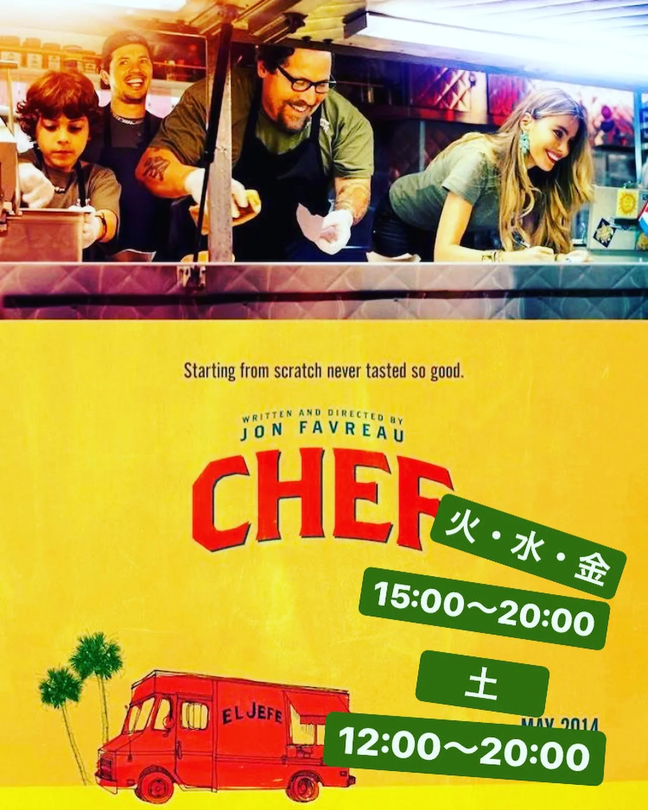
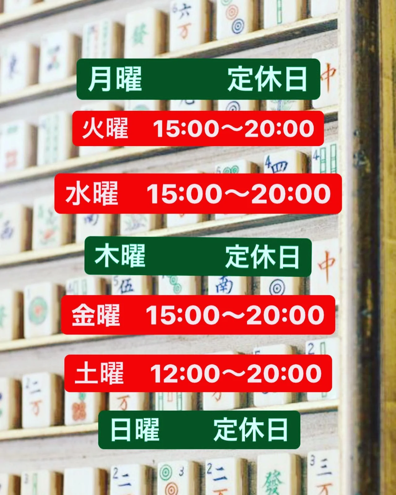
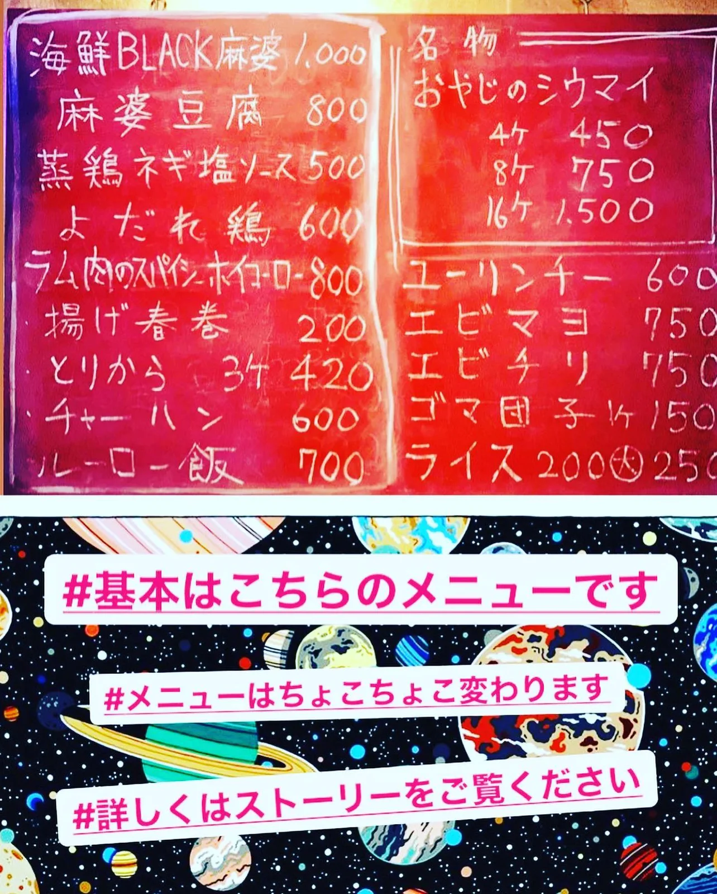
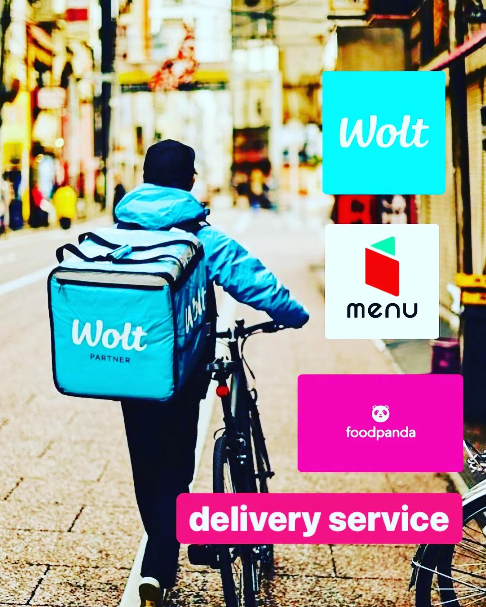

2021年5月14日
『chef三つ星フードトラック始めました』という映画が好きでして、




『chef三つ星フードトラック始めました』という映画が好きでして、 テイクアウトをしたいと思ったきっかけの映画です！ Netflixとアマプラでもあるみたいなんで、ぜひおすすめです！ さて、本題！！ １週間悩んで色々と考えたんですが、今月はテイクアウトを続けます。 この１週間やっていて色々なお客様に来ていただきました！ やるしかない！！！！！ （営業時間は画像をご覧ください） 音楽聴きながら、本読みながら、リスタートした時の新メニュー考えながら、ゆったりご予約お待ちしてまーす！！ デリバリー代行サービスもやっておりますのでそちらもぜひともご利用ください！（代金、高いけど！） それではお待ちしてまーす🍺 #中華バル#中華#中華料理#福島区グルメ#路地裏#B級グルメ#中国#チャイニーズ#路地裏チャイニーズ有馬#有馬#シュウマイ#餃子#点心#フォローミー#followme#パクチー#デリバリー#テイクアウト#フードパンダ#wolt #menu#chef三つ星フードトラック始めました